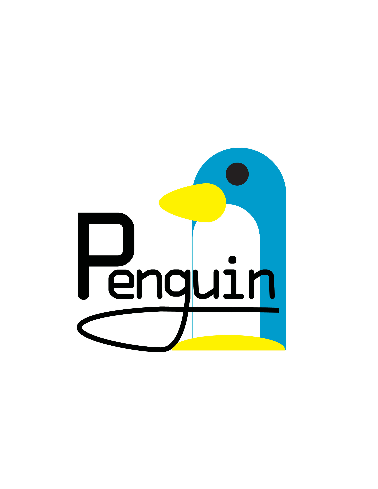

Course Title
Class: Computer Graphics
Semester: Fall 2021
Description: This course is designed to provide students with a foundational understanding of computer art and graphic design. Through a series of lectures, hands-on projects, and critiques, students will learn to recognize quality in computer art and develop a heightened sensibility as to why various graphic solutions are correct and why they were solved the way they were. Additionally, students will be introduced to the history of computer art and how computer graphics exist in various ways, providing an interdisciplinary learning experience. The course will also cover basic skills in the use of computer-aided design tools, composition, and the use of the computer for art process purposes. Throughout the course, students will have the opportunity to defend their art in oral presentations and critiques, further developing their communication skills. By the end of the course, students will be able to recognize and create quality computer art while maintaining professionalism and meeting the objectives set forth in the SLI.
Topics Covered:
- Principles of Design
- Adobe Applications
Skills Learned:
- Photoshop
- Illustrator
Projects:
Throughout the coures, I worked on some projects: creating own log and brochure. You can see my projects below
.jpg)
.jpg)